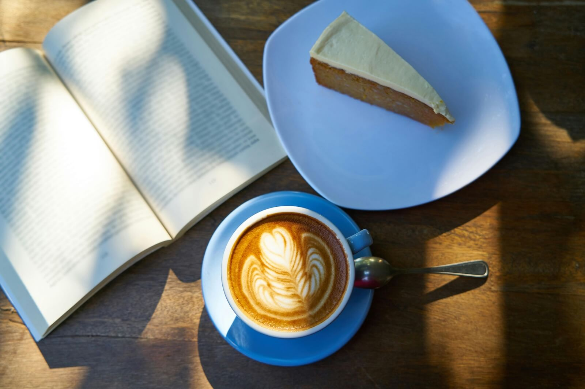
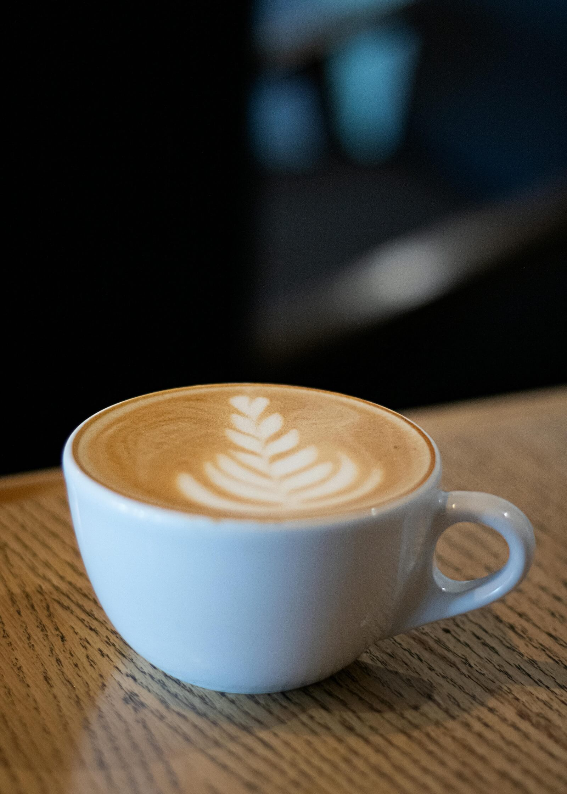
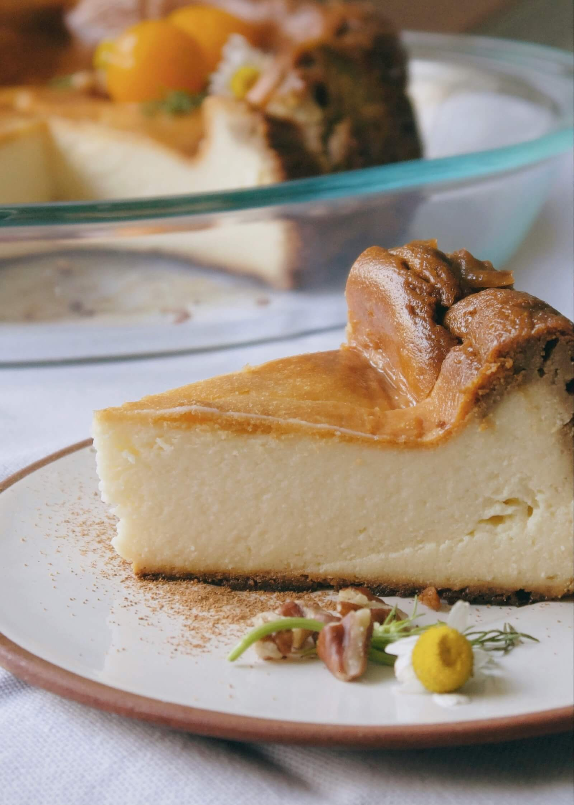
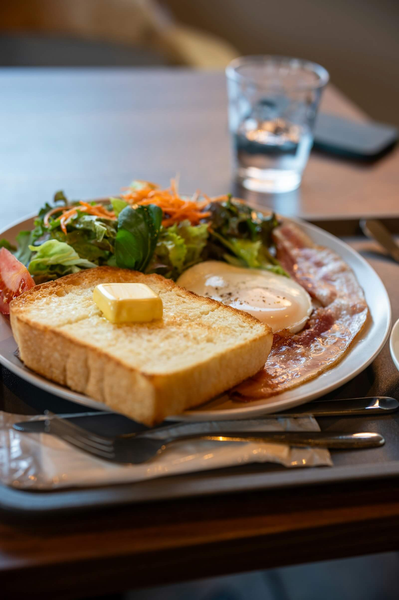

Small Cafe • Beppu
路地裏の小さなカフェ。丁寧に淹れるコーヒーと、季節の焼き菓子をご用意しています。
素材はシンプルに、味はやさしく。ひと息つける空間を整えています。

深煎り中心。香りと甘みが立つバランスを大切にしています。
丁寧に焼き上げる、深煎りに合うやさしい甘さを味わいください。
日常の隙間に、穏やかなひとときをお楽しみください
コーヒーと相性の良い焼き菓子、軽食をご用意しています。



別府駅から徒歩8分。お気軽にお立ち寄りください。
このサイトはWebサイト制作のサンプルとして制作しました。 制作者のプロフィールはこちらからご覧いただけます。